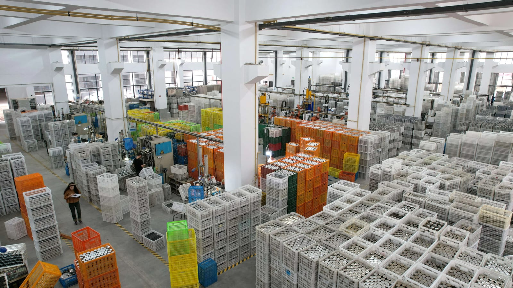

Manufacturing Partner Network
HDS works with long-term manufacturing partners in Yongkang and Jinhua, Zhejiang. HDS coordinates product sourcing, customization, production follow-up, quality-control scope, packaging and shipping; the photographs show partner facilities and do not imply HDS ownership.
